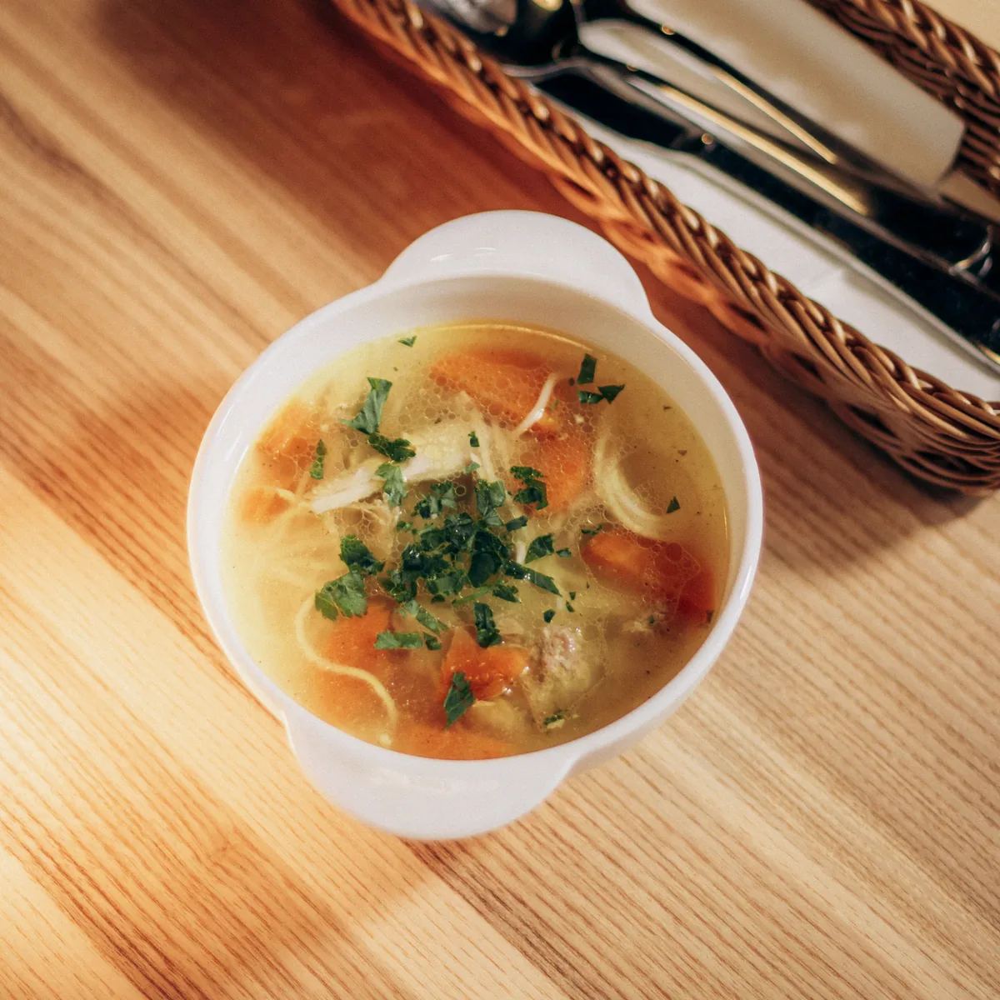
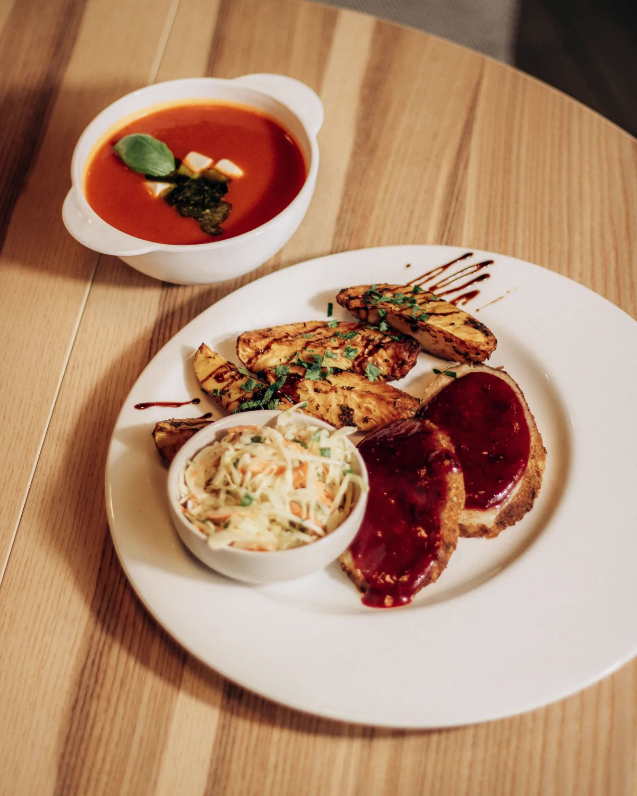
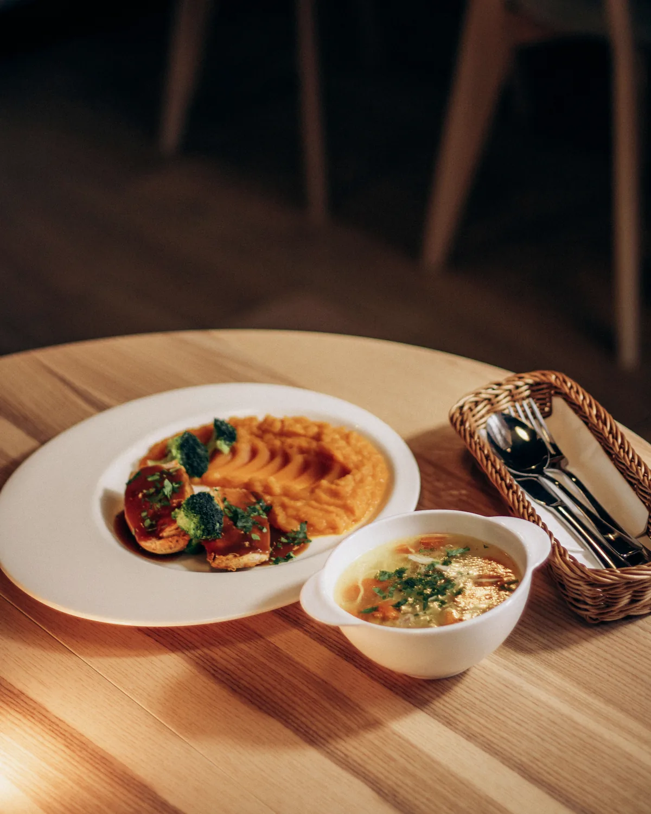
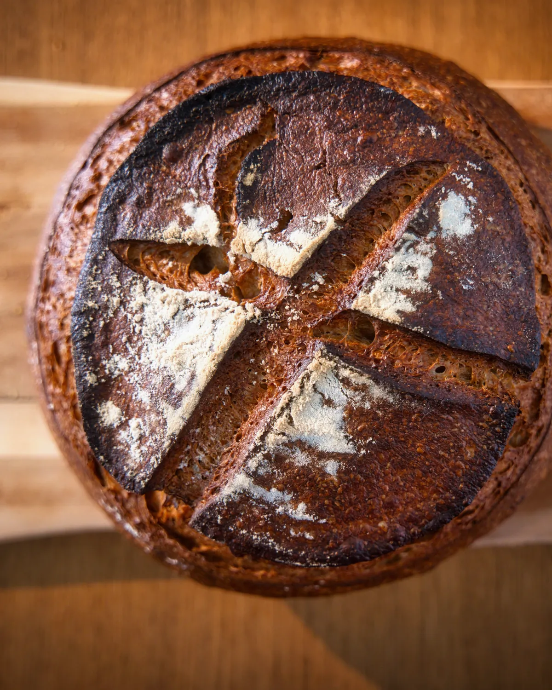
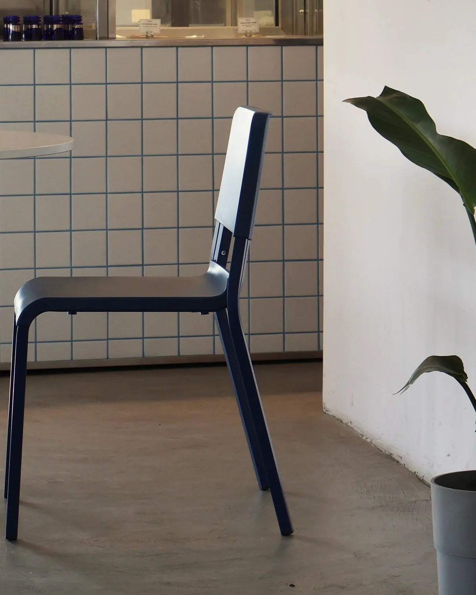
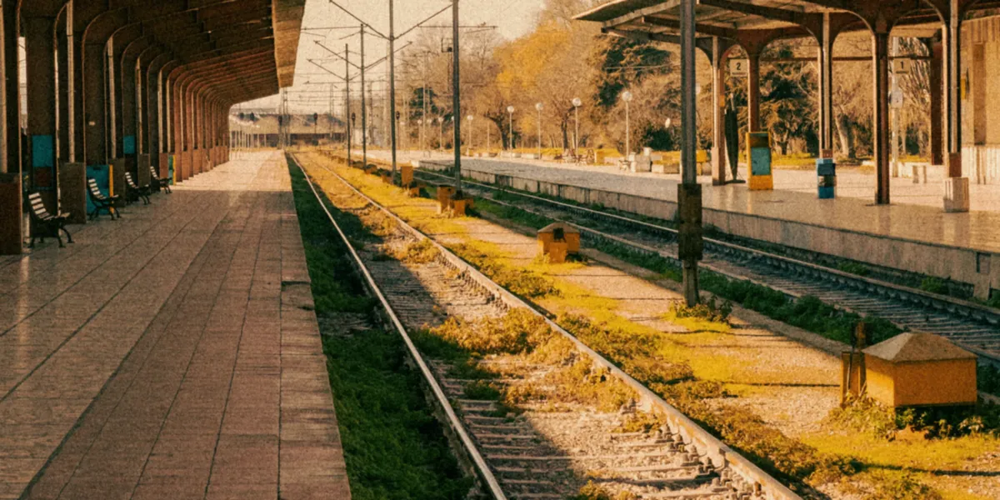

Bistro Perón
Obedy dve minúty od stanice v Žiline.
Žilina, teraz
Obed od 11:00 do 14:00.
Dnes
11:00 až 14:00
Polievka v cene
- 1 €
- 2 €
- 3 €
- 4 €
Obed od 11:00 do 14:00.Menu 3 je každý deň bez mäsa. Prílohy a alergény

Dnes na obed
Menu na pondelok
-
Polievka: Slepačí vývar s mäsom a rezancami
v cene menu
-
Menu 1: Kurací paprikáš, maslové halušky
8,50 €
-
Menu 2: Bravčové výpečky, dusená kapusta, parená knedľa
8,50 €
-
Menu 3: Zemiakové placky so syrom, kyslá smotana
7,90 €
-
Menu 4: Hovädzie líčka na červenom víne, zemiakové pyré, glazovaná mrkva
9,90 €
- PolievkaV cene menu. Samostatne za 2,20 €.
- Menu 3Každý deň bez mäsa.
- So sebouObjednávky od 10:30, obal na hlavné jedlo 0,40 €.
Zoznam alergénov
- obilniny obsahujúce lepok
- kôrovce
- vajcia
- ryby
- arašidy
- sója
- mlieko
- orechy
- zeler
- horčica
- sezam
- oxid siričitý a siričitany
- vlčí bôb
- mäkkýše

Týždeň
Menu na celý týždeň, aby ste si obed mohli naplánovať. Varíme od pondelka do piatku od 11:00 do 14:00.
Pondelok
- PolievkaSlepačí vývar s mäsom a rezancamiv cene
- Menu 1Kurací paprikáš, maslové halušky8,50 €
- Menu 2Bravčové výpečky, dusená kapusta, parená knedľa8,50 €
- Menu 3Zemiakové placky so syrom, kyslá smotana7,90 €
- Menu 4Hovädzie líčka na červenom víne, zemiakové pyré, glazovaná mrkva9,90 €
Utorok
- PolievkaFazuľová polievka s údeným mäsomv cene
- Menu 1Vyprážaný kurací rezeň, zemiakový šalát8,50 €
- Menu 2Segedínsky guláš, parená knedľa8,50 €
- Menu 3Šošovica na kyslo, volské oko, chlieb7,90 €
- Menu 4Hovädzie líčka na červenom víne, zemiakové pyré, glazovaná mrkva9,90 €
Streda
- PolievkaGulášová polievkav cene
- Menu 1Pečené kuracie stehno, dusená ryža, uhorkový šalát8,50 €
- Menu 2Bryndzové halušky so slaninkou, kyslé mlieko8,50 €
- Menu 3Špenátový prívarok, volské oko, varené zemiaky7,90 €
- Menu 4Hovädzie líčka na červenom víne, zemiakové pyré, glazovaná mrkva9,90 €
Štvrtok
- PolievkaParadajková polievka s ryžouv cene
- Menu 1Bravčový rezeň na prírodno, dusená ryža8,50 €
- Menu 2Sviečková na smotane, parená knedľa, brusnice8,90 €
- Menu 3Zeleninové rizoto so syrom7,90 €
- Menu 4Hovädzie líčka na červenom víne, zemiakové pyré, glazovaná mrkva9,90 €
Piatok
- PolievkaKapustnica s hubami a klobásouv cene
- Menu 1Vyprážaná treska, zemiakový šalát8,90 €
- Menu 2Plnená paprika v paradajkovej omáčke, parená knedľa8,50 €
- Menu 3Strapačky s kyslou kapustou, opražená cibuľka7,90 €
- Menu 4Hovädzie líčka na červenom víne, zemiakové pyré, glazovaná mrkva9,90 €
Menu 4 je jedlo týždňa, varíme ho od pondelka do piatku. Čísla za slovom alergény sú podľa zoznamu alergénov v časti Dnes na obed.
Stála karta
Keď vám z denného menu nič nesadne. Varíme ju v rovnakom čase ako menu, od 11:00 do 14:00.
Cestovný poriadok jedálplatí od 2. 11. 2026
| Cena | Jedlo | Množstvo |
|---|---|---|
| 2,20 € | Polievka dňa samostatne | 0,33 l |
| 3,90 € | Cesnačka so syrom a krutónmi | 0,33 l |
| Cena | Jedlo | Množstvo |
|---|---|---|
| 8,50 € | Vyprážaný kurací rezeň, zemiakový šalát | 150 g / 200 g |
| 8,80 € | Šalát Caesar s grilovaným kuracím mäsom | 350 g |
| 8,90 € | Vyprážaný syr, hranolky, tatárska omáčka | 150 g / 200 g |
| 8,90 € | Grilovaný syr s bielou plesňou, brusnice, listový šalát | 120 g / 150 g |
| 9,70 € | Hovädzí guláš, domáci chlieb | 250 g |
| Cena | Jedlo | Množstvo |
|---|---|---|
| 6,40 € | Palacinky s tvarohom a džemom, 2 ks | 250 g |
| 6,90 € | Šúľance s makom a maslom | 350 g |
| Cena | Jedlo | Množstvo |
|---|---|---|
| 2,20 € | Varené zemiaky s maslom | 200 g |
| 2,60 € | Hranolky | 200 g |
Ceny sú s DPH. Alergény vám povieme pri objednávke.
So sebou
Obed do kancelárie, do vlaku aj domov. Zavolajte, my ho pripravíme a vy si ho vyzdvihnete pri pulte bez čakania v rade.
Obed so sebouPerón
- Objednávka
- telefonicky od 10:30 do 13:30
- Vyzdvihnutie
- od 11:00 pri pulte
- Obal
- 0,40 € na hlavné jedlo, 0,50 € na polievku
- Vlastná nádoba
- bez príplatku
- Platba
- hotovosť, karta, stravné lístky aj stravné karty
Platí pondelok až piatok
Galéria
Stôl pri okne, chlieb z pekárne o ulicu ďalej a pult, pri ktorom si vyzdvihnete obed so sebou.
-

Obed pri okne: polievka, hlavné jedlo a príbor v košíku. -

Chlieb nám nosí pekáreň o ulicu ďalej, každé ráno o deviatej. -

Pult, pri ktorom si vyzdvihnete obed so sebou.
O nás
Perón je staré slovo pre nástupište. Od nás k nemu sú to dve minúty pešo a väčšina našich hostí sa ponáhľa do práce, z práce alebo na vlak.
Varí Tomáš, o hostí, objednávky a zásoby sa stará Lucia. Menu meníme každý deň, polievku varíme každé ráno a jedlo číslo 3 je vždy bez mäsa.
Ak sa ponáhľate na vlak, povedzte to pri objednávke. Jedlo vám dáme hneď do obalu.
Náš deň
- Tomáš začína variť polievky a omáčky.
- Z pekárne prichádza chlieb.
- Otvárame a berieme objednávky so sebou.
- Obed odchádza.
- Kuchyňa dovarí, chystáme menu na zajtra.
- Zatvárame.
Hodiny a cesta
Dve minúty pešo od hlavného vchodu stanice. Cez víkend máme zatvorené.
| Deň | Otvorené |
|---|---|
| Pondelok, dnes | 10:30 až 15:00 |
| Utorok, dnes | 10:30 až 15:00 |
| Streda, dnes | 10:30 až 15:00 |
| Štvrtok, dnes | 10:30 až 15:00 |
| Piatok, dnes | 10:30 až 15:00 |
| Sobota, dnes | zatvorené |
| Nedeľa, dnes | zatvorené |
Obedové menu varíme od 11:00 do 14:00, objednávky so sebou berieme od 10:30.
Nástupištná 2010 01 ŽilinaTelefón: 0XX XXX XXX (vymyslené číslo)obed@bistro-peron.example
